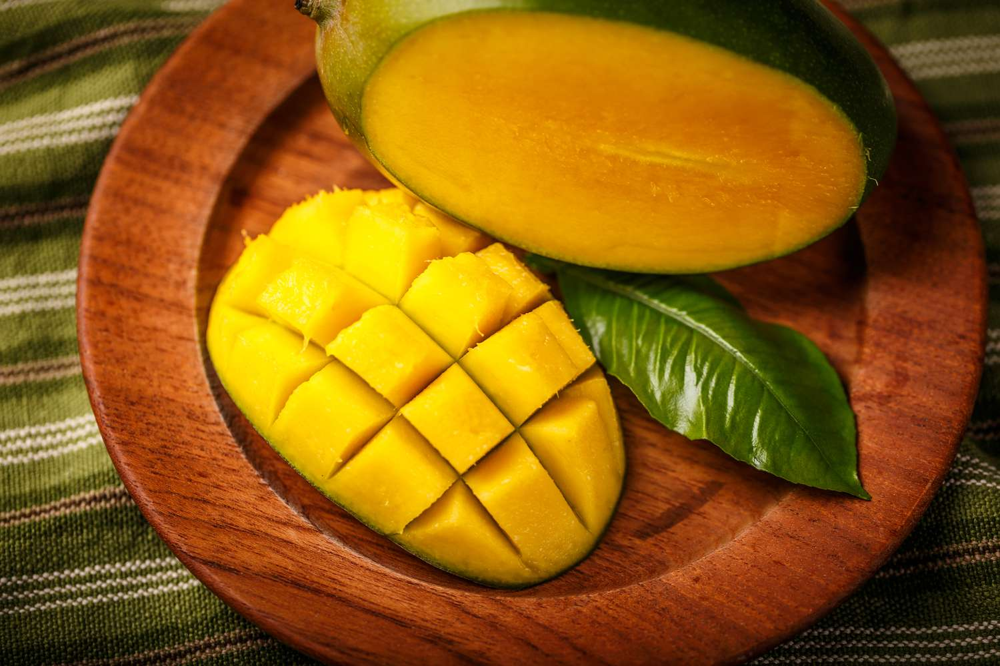
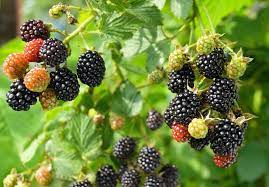
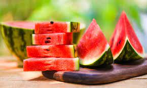

WHAT IS FRUIT
In a botanical sense, a fruit is the fleshy or dry ripened ovary of a flowering plant, enclosing the seed or seeds. Apricots, bananas, and grapes, as well as bean pods, corn grains, tomatoes, cucumbers, and (in their shells) acorns and almonds, are all technically fruits. Popularly, the term is restricted to the ripened ovaries that are sweet and either succulent or pulpy, such as figs, mangoes, and strawberries.
EXAMPLES
MANGO
STRAWBERRY
PINEAPPLE

BLACKBERRY
WATERMELON
HOME